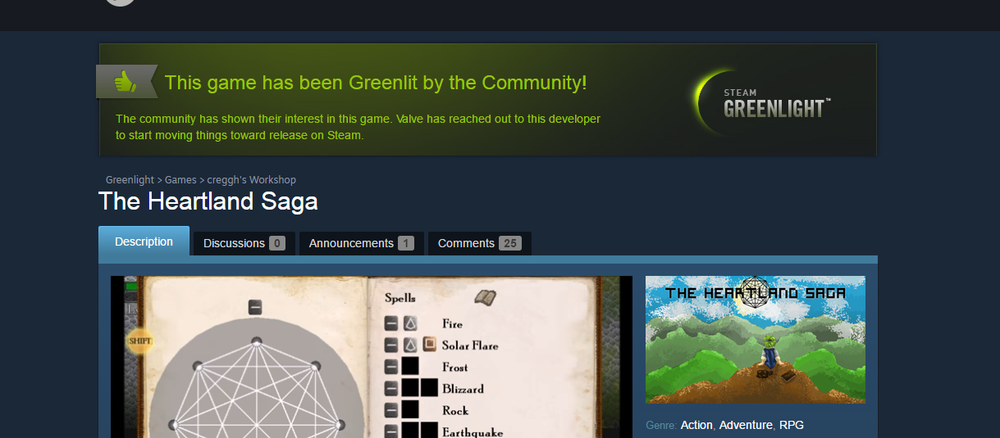
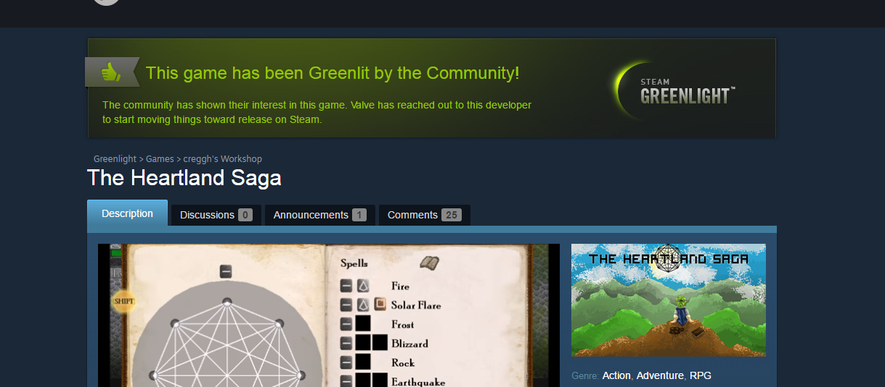

My Youth
We all have our obsessions. Everyone has a hobby they find themselves immersed in,
be it sports, cooking, or writing. I'm no different,
but being born into the dawn of immersive video games led
me to just being a dork. Being the video game addict that I am, and was from the age 4,
it didn't take long for me to want to build games myself. Unfortunately, youthful me had no pc
and no idea where to begin.
Fast forward a few years to when I was 12. At this point I had already owned a at least
a dozen game systems, and I could no longer wait to start making some of my own. I started
off by trying to make a game system of my own, but when I (with my limited knowledge of
electronics) couldn't build anything but an engine that would spin disks around,
I decided to get a pc at a garage sale and build a game for that.
My First Game
After years of dreaming, I finally found my opportunity to make a video game when I stumbled
across a piece of software called GameMaker. With this engine you could built a 2d game with
simple sprites and all without a single bit of coding knowledge. Naturally I was sold immidiately.
I spent the next year building all kinds of games from pac-man, breakout, and pong copies. After
getting bored of the basic I tried moving on to more complicated games...which led to a brick wall.
Unfortunately the combination of my lack of brain power and the engine being old fashioned led me
to not being able to complete a single larger project. So being the child I was, I gave up and went
back to playing games
Current Age

Even after all my obsessions with video games, I eventually gave up my dev dream to pursue more "realistic"
careers. After dabbling in various studies, I still found myself pretty obsessed with gaming. Regardless
it took me till I was 22 to rediscover my dream. After I downloaded a game on xbox called "Project Spark",
which is supposed to be a game about building your own games and game stories, I found myself thinking about
game design non-stop. I didn't sleep for at least a couple days, and instead I stayed up writing a full
background story as well as researching everything I could about indie game design. Fortunately since about
2010 indie game dev has boomed leading to a large array of game design opportunaties and markets. In fact GameMaker
itself had been completely redone, with an addition of scripting functionality using it's own beginner oriented
version of C. Being already accustomed with the user interface of GameMaker, I picked it up right away
and began making my dream game.
 In the past 8 months I worked constantly, between learning code and game design ideologies. I wanted to make a game
that was a success, and by my terms of success. No I wasn't expecting to get rich (Or any money for that matter). I just
wanted to make a game that young me would want to play. Something that I could find pride in. So far it has been a major success,
and even though the game still has much left before it is complete, I know I have already surpassed my expectations. I also know
that I officially found something that I love to do, and through coding I found myself at LaunchCodes. Soon enough I
may even find myself coding in my career. Looking back on that, I know for certain that 6 year old me couldn't be more proud of me.

In the past 8 months I worked constantly, between learning code and game design ideologies. I wanted to make a game
that was a success, and by my terms of success. No I wasn't expecting to get rich (Or any money for that matter). I just
wanted to make a game that young me would want to play. Something that I could find pride in. So far it has been a major success,
and even though the game still has much left before it is complete, I know I have already surpassed my expectations. I also know
that I officially found something that I love to do, and through coding I found myself at LaunchCodes. Soon enough I
may even find myself coding in my career. Looking back on that, I know for certain that 6 year old me couldn't be more proud of me.
